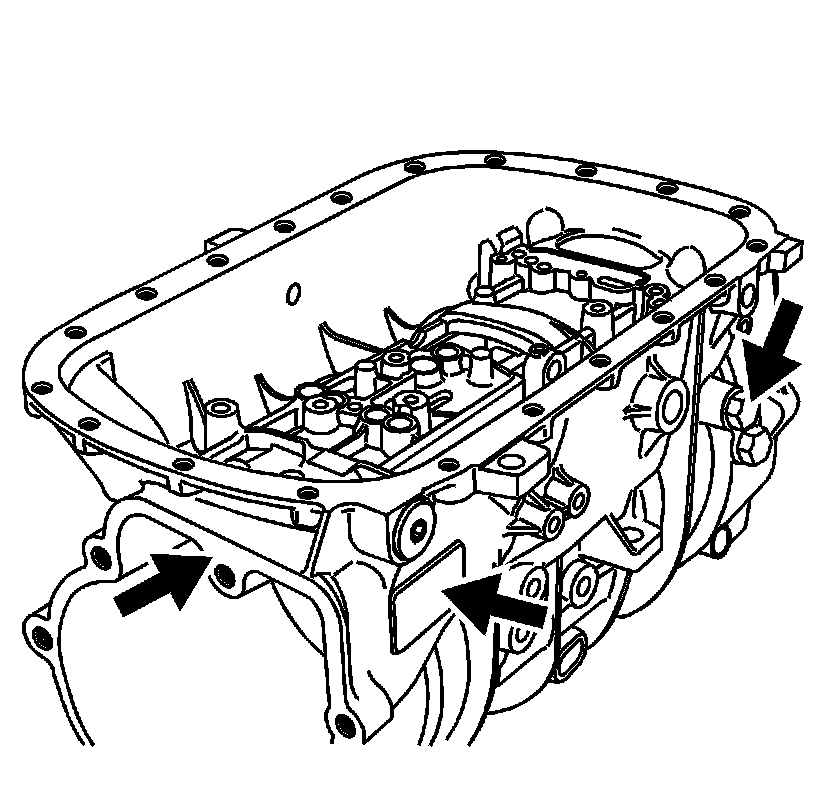
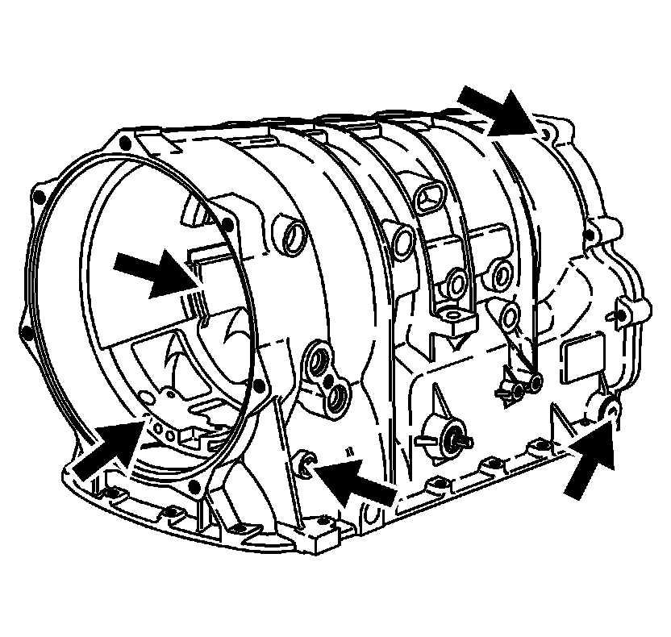

Case Assembly Inspection
Case Assembly Inspection

1. Inspect the components that are still on the transmission case for the following conditions:
* Loose, cross-threaded, or damaged threads on the transmission oil cooler fittings
* A loose, missing, or damaged transmisssion name plate

2. Inspect the transmission case for the following conditions:
* Gasket sealing surfaces that are damaged or have porosity
* Bolt and screw holes that are stripped or damaged - repair with thread insert
* Damaged or porous case and fluid passages
* Damaged snap ring grooves or housing splines
* A loose, cross threaded, or damaged pressure test plug and fluid level hole plug